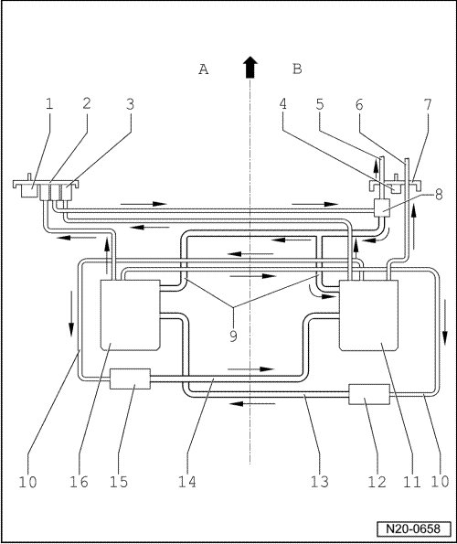

Fuel Tank
Fuel Lines and Components in Fuel Tank, Connection Diagram
- A - Left Side of Tank
- Arrow - Indicates Direction of Travel
- B - Right Side of Tank

1 Gravity valve
• Left side
2 Flange
• Left side
3 Fuel filter
4 Gravity valve
• Right side
5 Supply line
• To fuel rail
6 Supply line for auxiliary heating
7 Flange
• Right side
8 Fuel pressure regulator
9 Return line
• From fuel pressure regulator
• To fuel delivery units on left and right sides
10 Supply line for suction jet pump
11 Fuel delivery unit
• Right side
12 Suction jet pump
• Right side
13 Delivery line
• Black
• To Fuel Pump (FP) unit, left side
14 Delivery line
• Black
• To Fuel Pump (FP) unit, right side
15 Suction jet pump
• Left side
16 Fuel delivery unit
• Left side